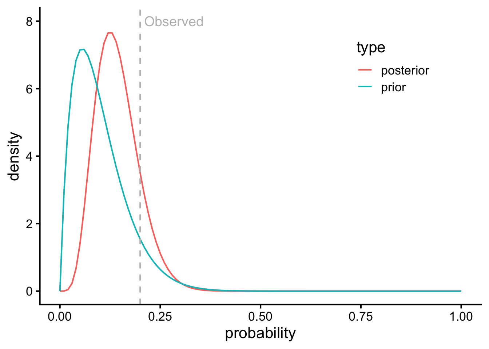
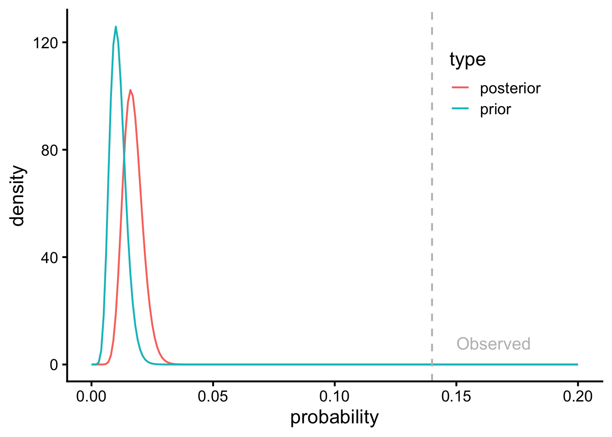

# hide this code chunk#| echo: false#| message: false# defines the se functionse <-function(x) {sd(x, na.rm =TRUE) /sqrt(length(x))}#load these packages, nearly always neededlibrary(tidyverse)library(knitr)# sets maize and blue color schemecolor_scheme <-c("#00274c", "#ffcb05")
Purpose
These are notes as I work through and understand the notes from BIOSTAT 682
Single Parameter Models
The motivating example here is that there was an incidence of cancer wherein 8 cancers appeared out of a total of 145 people. The question is whether this incidence is greater than the expected incidence of 4.458% from (“Cancer Statistics - NCI” 2015)
Using the binomial distribution probability mass function for a binomial distribution
\[P(Y = y | n, \theta) = \binom{n}{y} \theta^y (1 - \theta)^{n-y}\] In this nomenclature \(\binom{n}{y}\) expands out to \(\frac{n!}{y! \times (1-y)!}\) where \(y\) is the number of successes, \(n\) is the number of trials. In the overall cuntion \(\theta\) is the probability of success on each trial.
This can also be denoted as \(Y \sim \text{Binomial}(n, \theta)\) where \(n\) is the number of trials and \(\theta\) is the probability of success on each trial, Using this we can calculate the likelihood of observing 8 or more cancers out of 145 people given the expected incidence rate of 4.44% and some other probabilities
The hypothesis being tested are that:
\(H_A: \theta = 0.03\)
\(H_B: \theta = 0.04\)
\(H_C: \theta = 0.05\)
\(H_D: \theta = 0.06\)
In terms of prior probabilities, we can assign prior probabilities to each of the hypotheses above. If we think that \(H1\) is 50% likely, and \(H_{A-D}\) are equally likely after that.
Likelihoods are calculated from the probability mass function for the binomal function \(Y \sim \text{Binomial}(n, \theta)\)
can be calculated for each tested hypothesis (\(H_x\) in comparason to all possible hypotheses \(Hi\)) via \(P(H_x \mid y_o = 8) = \frac{P(H_x) \times, P(y_o = 8 \mid H_x)}{\sum_{i=A}^{D} P(H_i) \times, P(y_o = 8 \mid H_i)}\). In simplified terms this is the prior probability of the hypothesis, times its likelihood divided by the sum of all prior probabilities times their likelihoods.
Show the code
n <-145cases <-8theta <-c(0.03, 0.04, 0.05, 0.06)priors <-c(0.5, rep(0.5/3,3))data.frame(hypothesis = theta,priors=priors) |>mutate(likelihood =dbinom(cases, size = n, prob = hypothesis)) |>#this does not give the same results as the notes probably an approximationmutate(rel.likelihood = likelihood /min(likelihood)) |>mutate(posterior = priors * likelihood /sum(priors * likelihood)) |>kable(caption=paste0("Probability of observing ", cases, " cases out of ",n, " trials"),digits=c(3,3,2))
Probability of observing 8 cases out of 145 trials
hypothesis
priors
likelihood
rel.likelihood
posterior
0.03
0.500
0.04
1.000
0.244
0.04
0.167
0.10
2.415
0.196
0.05
0.167
0.14
3.429
0.279
0.06
0.167
0.14
3.460
0.281
Show the code
#this does not give the same results as the notes
This means that hypotheses 4 and 5 explain the data approximately the same times better than hypothesis 1.
The likilihood principal
There is an articulation of the Likelihood Principal: once \(Y\) has been observed we now note it as \(Y = y_o\) , and no other value of Y matters. We should treat as \(L(\theta|y_o) = Pr(Y = y_o | \theta)\) as the only likelihood function of \(\theta\) and no other aspects of the experiment or data matter for inference.
The conjugate prior for a binomial distribution is a beta distribution
What if the prior probabilities are continuous, if we model them as \(\theta = Beta(\alpha,\beta)\). The density of this prior is given by:
In this case \(\frac{\Gamma(\alpha + \beta)}{\Gamma(\alpha)\Gamma(\beta)}\) is a normalizing factor that ensures probabilities intgrate to one and exist between zero and one.
The posterior density is therefore proprotional to to the prior times the likelihood \(\pi(\theta \mid y) \propto \pi(\theta) \times p(y \mid \theta)\). This expands out to this \(\pi(\theta \mid y) \propto \theta^{\alpha - 1} (1 - \theta)^{\beta - 1} \times \theta^y (1 - \theta)^{n - y}\) droppping the constants for now. By combining the exponents we get \(\pi(\theta \mid y) \propto \theta^{(\alpha + y) - 1} (1 - \theta)^{( \beta + n - y) - 1}\). This is the kernel (un-normalized density) of a Beta distribution with updated parameters \(\alpha' = \alpha + y, \quad \beta' = \beta + n - y\)
To get the proper density, we need to insert the Beta normalizing constant with the new parameters \(\pi(\theta \mid y) = \frac{\Gamma(\alpha + y + \beta + n - y)}{\Gamma(\alpha + y)\Gamma(\beta + n - y)} \theta^{\alpha + y - 1} (1 - \theta)^{\beta + n - y - 1}\) which simplifies to \(\theta \mid y \sim \operatorname{Beta}(y + \alpha, \, n - y + \beta)\). This is the posterior probability distribution.
To calculate the mean and variance, for any \(\operatorname{Beta}(a, b)\) random variable:\(\mathbb{E}[\theta] = \frac{a}{a + b}, \quad \operatorname{Var}(\theta) = \frac{ab}{(a + b)^2 (a + b + 1)}\) we can plug in \(a = y + \alpha\), \(b = n - y + \beta\): \(\mathbb{E}[\theta \mid y] = \frac{y + \alpha}{n + \alpha + \beta}\) (this is a weighted average between the observed proportion \(y/n\) and the prior “pseudo-mean” \(\alpha/(\alpha + \beta)\), with more weight on the data when n is large) \(\operatorname{Var}(\theta \mid y) = \frac{(y + \alpha)(n - y + \beta)}{(n + \alpha + \beta)^2 (n + \alpha + \beta + 1)}\)
To summarize if our priors are \(Beta(\alpha, \beta)\) and our posterior probabilities are \(P(\theta|Y=y_o=8)=Beta(y_o + α, n − y_o + β)\)
#these are defined from the conjugate prior/posterior relationshipprior_mean = alpha/(alpha+beta)prior_ci_lower =qbeta(0.025, alpha, beta)prior_ci_upper =qbeta(0.975, alpha, beta)posterior_mean = (alpha + cases)/(alpha+cases+n-cases+beta)posterior_ci_lower =qbeta(0.025, (alpha + cases), (cases+n-cases+beta))posterior_ci_upper =qbeta(0.975, (alpha + cases), (cases+n-cases+beta))data.frame(Distribution=c("Prior","Posterior"),Mean=c(prior_mean,posterior_mean),CI_Lower=c(prior_ci_lower,posterior_ci_lower),CI_Upper=c(prior_ci_upper,posterior_ci_upper)) |>kable(digits=3,caption="Summary statistics for prior and posterior distributions")
Summary statistics for prior and posterior distributions
Distribution
Mean
CI_Lower
CI_Upper
Prior
0.500
0.025
0.975
Posterior
0.061
0.027
0.100
By this model the posterior probability that the incidence is greater than 4.44% is 79.8%.
Example of Beta as a Conjugate Prior
Imagine there is a mouse that has a rare phenotype, we observe \(n=20\) mice, and find \(y=4\) have this phenotype. The probability of this occuring can be denoted as \(Y | p \sim Bin(20,p)\). Before noticing this, we believe the phenotype is uncommon but i have low certainty on this hypothesis, given as \(p \sim Beta(2,20)\). This was selected because in \(Beta(\alpha,\beta)\) this means that
\(\alpha-1\) is how often its observed (successes). By that \(\alpha=\text{successes}+1\)
\(\beta-1\) is the number of times not observed (failures). By that \(\beta=\text{failures}+1\)
\(\alpha + \beta\) is the strength of this conviction
The mean estimate is \(E[p]=\frac{\alpha}{\alpha + \beta}\)
So this prior is formulating on the expectation that out of 18 examples, I would have expected one example of this phenotype. This corresponds to an estimate of 10% \(\frac{2}{2+19}\). Here are three possible visualizations of priors for this example, presuming one success out of 18, 5, or 30 trials
The posterior is the likelihood times prior is \(L(p|y_o=4) \times \pi(p)\). This becomes \((p∣y_o) \sim Beta(\alpha+Y_o,\beta+n−y_o)\). For this example this computes to \(Beta(2+4,20+20-4)=Beta(6,36)\)
Show the code
data.frame(probability=seq(0,1,by=0.01)) |>mutate(prior =dbeta(probability,2,18),posterior =dbeta(probability,6,36)) |>pivot_longer(c(prior,posterior),names_to="type",values_to ="density") |>ggplot(aes(y=density,x=probability,col=type)) +geom_line() +geom_vline(xintercept=4/20, lty=2, col="grey") +annotate(geom ="text",x =4/20+0.01, # ← your chosen x-positiony =8, # ← your chosen y-positionlabel ="Observed",hjust =0, # 0 = left justified (most important part)vjust =0.5, # optional: 0.5 = vertically centeredsize =5, color ="grey" ) +theme_classic(base_size=16) +theme(legend.position=c(0.8,0.8))

Given this result of a posterior probability of \(Beta(6,36)\) this corresponds to a mean probability of \(\frac{6}{6+36}=\frac{6}{42}=\) 0.1428571. The variance is \(Var(p)=\frac{\alpha \times \beta}{(\alpha + beta)^2\times(\alpha + \beta + 1)}= \frac{6\times 36}{(6+36)^2\times(6+36+1)}=\) 0.0028477. The posterior mode is \(MAP=\frac{\alpha-1}{\alpha + \beta - 2}=\) 0.125.
Nutrition Example
You are studying a rare adverse event from a new dietary supplement. From prior literature, events are uncommon, but not impossible. You now run a small pilot study. You observe 7 adverse events out of 50 participants.
I think a reasonable prior probability for adverse events would be something like 1% with reasonable certainty (perhaps 1000 prior data points with 10 being affected, so \(\alpha=\text{successes}+1=11\) 990 being unaffected so \(\beta=\text{failures}+1=991\)), so i think a prior distribution of \(Beta(11,991)\) makes sense.
Show the code
observed <-7tested <-50alpha <-18beta <-1037
By this logic, the posterior probability should be \(Beta(\alpha+y_o,beta+n-y_o)\) or \(Beta(18,1037)\). This computes to a posterior mean of 0.0170616 [0.010152, 0.0256989] in comparison to an observed maximum likelihood estimator (MLE) of 0.14. The modal observation is \(MAP=\frac{\alpha-1}{\alpha + \beta - 2}=\) or 0.0161443 with a variance of \(\frac{\alpha \times \beta}{(\alpha + beta)^2\times(\alpha + \beta + 1)}\) or 1.5881167^{-5}. This is visualized below, illustrating the effect of a strong prior
Show the code
data.frame(probability=seq(0,1,by=0.01)) |>mutate(prior =dbeta(probability,11,991),posterior =dbeta(probability,18,1037)) |>pivot_longer(c(prior,posterior),names_to="type",values_to ="density") |>ggplot(aes(y=density,x=probability,col=type)) +geom_line() +geom_vline(xintercept=observed/tested, lty=2, col="grey") +annotate(geom ="text",x = observed/tested+0.01, # ← your chosen x-positiony =8, # ← your chosen y-positionlabel ="Observed",hjust =0, # 0 = left justified (most important part)vjust =0.5, # optional: 0.5 = vertically centeredsize =5, color ="grey" ) +theme_classic(base_size=16) +theme(legend.position=c(0.8,0.8))

Proper and Improper Distributions
A proper probability distribution integrates to 1, this means if you add up the sum of all possible outcomes, you get unity. Bayes theorom assumes proper posterior probability distributions. This means that for discrete distributions like the bimomal \(\sum \text{probabilities}=1\) and for continuous distributions \(\int \text{density}=1\) (discreted distributions give exact probabilities for a number whereas continuous distributions give density between specific ranges).
Continuous Distributions
The central limit theorem justifies using a normal distribution for many casses. This means that for a binomial distribution for example, that as n becomes large, the binomial distribution becomes a normal distribution. The CLT says that averages and estimators can become normal even if the underlying data (e.g. binomal, bernoulli, poisson) is not.
For a normal distribution \(N(\mu, \sigma^2)\) where \(\mu\) is the mean and \(\sigma^2\) is the variance (or the \(SE^2\)).
Specifying a Prior for the Standard Error From the Conjugate Prior of the Normal Distribution
For a Normal likelihood with known mean \(\mu\), the conjugate prior for the variance is the inverse-gamma distribution: \(\sigma^2 \sim InvGamma(\alpha,\beta)\) where \(\alpha\) is the strength of the prior, approximately \(\alpha \approx \frac{df_{prior}}{2}\) and \(\beta\) is the prior scale, or approximately \(\beta \approx \frac{df_{prior} \times s^2_0}{2}\) where \(s^2_0\) is the prior guess of the variance. Key equations:
For the variance \(E(\sigma^2)=\frac{\beta}{\alpha-1}\) and \(Var(\sigma^2)=\frac{\beta^2}{(\alpha-1)^2(\alpha-2)}\)
The posterior mode is \(\frac{\beta}{\alpha+1}\).
With posterior updating (given a new degree of freedom \(\frac{n}{2}\) and sum of squares \(\frac{S}{2}\)), \(\sigma^2|y \sim InvGamma(\alpha + \frac{n}{2},\beta + \frac{S}{2})\)
If we use precision \(\frac{1}{\sigma^2}\) then the conjugate prior for variance is the Gamma distribution with the same meaning for \(\alpha\) and \(\beta\) except that \(\beta\) is now a rate rather than a scale.
Example for Estimating Prior and Posterior Variance
You are studying a biomarker that is known (from calibration experiments) to have mean \(\mu=100\). You are uncertain about the variance \(\sigma^2\). You have this prior information:
From historical data, you believe that the standard deviation is around 5 units (so \(\sigma^2=25\))
This belief is roughly equivalent to 20 prior observations
Based on this \(\alpha\) should be approximately \(\frac{20}{2}=10\) and \(\beta\) should be approximately \(\beta \approx \frac{df_{prior} \times s^2_0}{2} = \frac{20 \times 5^2}{2}=250\). Therefore the prior for the variance should be described as \(\sigma^2 \sim InvGamma(10,250)\). This gives a prior mean of \(E(\sigma^2)=\frac{\beta}{\alpha-1}=\frac{250}{10-1}=\) 27.7777778 with a variance of 96.4506173.
You now collect 10 new measurements 101, 96, 98, 103, 99, 100, 97, 102, 104, 95. The sum of squares of these new values is 85. The posterior distribution of \(\sigma^2\) is therefore
The updated \(\sigma^2\) values are then \(E(\sigma^2)=\frac{\beta}{\alpha-1}\), \(Var(\sigma^2)=\frac{\beta^2}{(\alpha-1)^2(\alpha-2)}\), and \(\text{Mode}=\frac{\beta}{\alpha+1}\) so 20.8928571 [12.4523081, 34.8405654] with a modal value of 18.28125. This is compared to the prior estimates which were 27.7777778 [14.6328871, 52.1334173] and a modal value of 22.7272727. As you can see from the figure the posterior shifted left with the updated data that had smaller variance than expected. The updated standard deviation is 4.5708705[3.5287828, 5.9025897] compared to 5. The probability that the value is below 5 is 0.7984651. Note for this case we have to use Gamma rather than Inverse-Gamma due to point arithmetic issues with large arguments in pinvgamma.